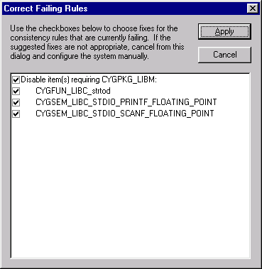
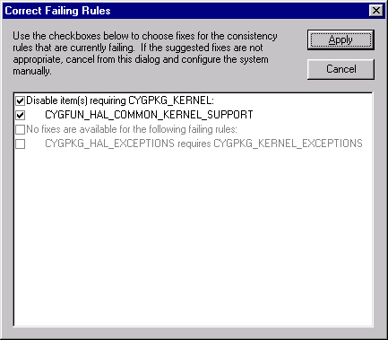

Consistency rules exist to verify that any configuration that may be generated is legal — it will build successfully and generate code that will behave in a reasonable manner.
Consistency rules are checked as configurable items are changed, and the Configuration Tool can suggest fixes for the consistency check failure(s) about to be introduced by suggesting a change to the configurable item or a related item.
This dialog is displayed if one or more failing rules are detected. Depending on the settings chosen in the Tools -> Options dialog, it will be displayed after an item is changed or before a build is started.

The dialog shows failing consistency rules and suggested fixes. If the Configuration Tool is unable to suggest a suitable fix for a failing rule then the corresponding items will be grayed; otherwise you can check the adjacent box to accept the fix. Fixes are grouped according to the configuration items they affect (for example, “Disable item(s) requiring...”). A group of fixes may be selected or unselected by checking or unchecking the box on the summary line.
Clicking Apply causes the Configuration Tool to apply all selected fixes. Note that fixes may have side effects and so may cause the “Correct Failing Rules” dialog to be redisplayed.

Note that the Configuration Tool will only be capable of suggesting fixes in limited circumstances. The conditions are summarized in the following tables:
Table 3-1. Fixes suggested after changing an item"s value
| Action | Failing rule | Suggested action | Types of item action may be applied to |
|---|---|---|---|
| Set | Requires | Enable required item | Boolean or radio |
| Set | Precludes | Disable precluded item | Boolean or radio in one- or two-item group |
| Unset | Required by | Disable requiring item | Boolean or radio in one- or two-item group |
| Set | Precluded by | Disable precluding item | Boolean or radio in one- or two-item group |
Table 3-2. Fixes suggested before building
| Rule | Suggested action | Types of item action may be applied to |
|---|---|---|
| Requires | Enable required item | Boolean or radio |
| Precludes | Disable precluded item | Boolean or radio in one- or two-item group |
The process of suggesting fixes may be disabled using the Tools->Options dialog.
For any item, you can identify currently failing consistency rules in the Properties Table; failing rules are marked with an exclamation point. A complete list may be obtained from the Tools->Options dialog.